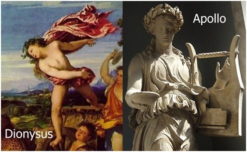
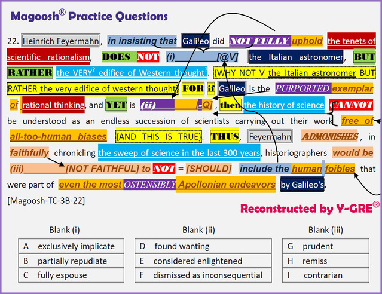

云英语
云英语：因学术而改变

1. Y-GRE语境背景预处理
Background
【Galileo Galilei伽利略】
伽利略（1564-1642）意大利物理学家，天文学家，最牛逼之处在于用实验证明了惯性定律和加速度定律，可以说是启蒙了牛顿定律。（大家还记得比萨斜塔上一同落下大小球么~，用实验推翻了Aristotle的理论，也因此获得了iconoclast"偶像破坏者"/"创新者"的美誉）。他创新性地采用实验和数学结合的方式来研究。
因为伽利略采用科学实验方法去验证假设，简直就是科学理性主义的paragon;但是作为人类一员，伽利略也难以免俗。
伽利略在 Dialogues Concerning Two New Sciences 《关于两门新科学的对话》 中的第一页就说:
"At times also I have been put to confusion and driven to despair of ever explaining something for which I couldnot account, but which my senses told me to be true"
【Scientific rationalism科学理性主义】
科学理性主义，源于17世纪起的Scientific Revolution"科学革命"，是Enlightenment"启蒙运动"的重要遗产。科学理性主义是指以reason"理性"和knowledge"知识"（而非宗教信仰或情感反应）作为观点和行动的基础，注重应用scientific method"科学方法"，任何观点需证明为真才能被接受为知识。总的来说，科学理性主义融合了rationalism"理性主义"（强调理性是知识的源泉和检验标准）和empiricism"经验主义"（强调经验是知识的来源）的元素。
【Apollonian VS Dionysian】
Apollonian"日神精神"与Dionysian"酒神精神"是伟大的哲学家Nietzsche尼采在 Die Geburt der Trag? die aus dem Geiste der Musik 《悲剧的诞生》中提出的相对概念。一般来说，日神Apollo阿波罗代表rational"理性",harmonious"和谐"与restrained"节制"，而酒神Dionysus狄奥尼索斯代表irrational"非理性"，frenzied"疯狂"与unrestrained"无节制"。形象一点来说，Google是阿波罗式的，而人人则是狄奥尼索斯式的。
2. 云英语VB词汇进阶
注：以下内容并非为初学者设置，仅供有VB词汇建造师基础者阅览！
Vocabtenet【<ten-=keep/hold坚持四项基本原则】原则-宗旨-信条{principle/belief/doctrine}
rationalism【~reason】理性主义
astronomer【<astro-=star】天文学家
edifice【~edify构建精神大厦】大厦（常比喻恢弘架构）
purport【<pro-port=bring forth】声称|意思
succession【<sub-cess-ion=going up to】接续-继任
admonish【<mon-=warn】告诫
foible【~feeble虚弱的】弱点
chronicle【<chron-=time】编年史|编史
ostensible【<ob-tens-ible=对面展开】表面上的
ostensible【<ob-tens-ible=对面展开】表面上的
Dionysian【<Dionysus酒神】狄奥尼索斯式的（混乱狂野直觉）
repudiate【<re-pudi-ate一脚踢开】拒不承认-断绝关系
espouse【~spouse配偶】嫁娶-拥护-支持
prudent【<pro-vid-ent=looking forward】小心谨慎精明有远见
remiss【<re-miss=sent to a lesser degree】玩忽职守的-疏忽懈怠的
contrarian【~contra-=against】故意对着干的-反向投资者（别人看空他看多）
Synonyms
uphold: support, advocate, back, champion
exemplar: archetype, prototype, paradigm, ideal, paragon, epitome
remiss: derelict, negligent, neglectful, lax, slack
repudiate: disavow, gainsay, rebut, confute
Phrasescarry out 执行
the sweep of 横扫-扫过的范围
3. Y-GRE预测式图景阅读
Process本段由3句组成：
1. Heinrich Feyermahn（查无此人= =…这又是 magoosh 拼出来的一个人，就像"Jungenfreud"荣格弗洛伊德一样）认为（科学家）伽利略并没有…这是我们非常熟悉的pattern，对后文最可能的预测即是"伽利略并非纯粹客观，他也是有偏见biases的"。
【验证】Heinrich Feyermahn认为伽利略并没有完全采纳科学理性主义的原则tenet。
然后，根据"in insisting that"就可以做这样的预测[表面现象VS深层实质]：Feyermahn在这样认为的基础上，不是简简单单地只想说这一件事、或想说伽利略一个人，而是还想说其他事、或其他人；在这里，他并不是simply remark on（或者，他并不是only find fault with）那个意大利天文学家即伽利略，而是还要find fault with其他人。实际上blank (i)已经确定了。
【验证】blank (i)= exclusively implicate(请全文形成图景后再行比对答案！)
在确定blank (i)之后，还可以发现本段用theItalian astronomer指伽利略，而这明显是相对于更大的群体的指称。因此后面的大厦edifice是由"伽利略们"这样的科学家们建立起来的，必须注意到edifice和rationalism不是一个东西！不只伽利略，整个edifice都不能fully uphold科学唯理主义的宗旨；看到but rather，需要意识到，本段后文将会着重找茬edifice。
【验证】需读后文。
【小结】Heinrich Feyermahn说伽利略有问题，不只是为了说他，更是为了说整个西方科学体系的问题。
2. 首先看到for，为什么呢？（因为伽利略是西方科学的典范人物被！）本段继续写道，如果，伽利略是"据称的"理性思维的"典范"，然而同时and yet他又怎么样…我们推测他"实际上"是"有缺陷的"（并不fully uphold科学理性主义的宗旨）。此时可以初步确定blank (ii)。
【验证】blank (ii)= found wanting(请全文形成图景后再行比对答案！)
if如果伽利略如此的话（有问题），then the history of science…此时敏锐意识到此处的科学历史也即第一句的大厦；如果伽利略有问题，则整个大厦自然也有问题。而且后面说这个科学史不能被视作是free of all-to-human biases，再次印证了blank(ii)的内容。
因为第二句主要是解释第一句为什么Heinrich Feyermahn不光找伽利略的茬，预测第三句将进行实质上的对整个科学大厦的找茬。
【验证】需读后文。
【小结】伽利略（典范人物）有问题，整个西方科学大厦就都有问题。
3. 因此，Feyermahn忠告说…我们很容易预测他要告诫史学工作者莫要忽视科学中的偏见。
【验证】在对近300年来整个科学（sweep本义"扫"，这里是扫过的范围，也是整体性概念，对应前文的edifice）进行编史的工作中，史学工作者（千万莫要）漏掉人性的弱点human foibles；这些人性弱点甚至内在于那些表面上看起来ostensibly最阿波罗式的科学探索中。
此处ostensibly和purported是直接的paraphrase，且与前文的not fully密切相关。所以我们知道这"看似"最"阿波罗式"（和谐批判推理而非混乱狂野直觉）的科学探索者也即"伽利略们"。进一步意识到include the human foibles也即Blank(i)的find fault with not only Galileo, but also theedifice。至于Blank(iii),既然千万莫要漏掉，一旦漏掉则史学家难辞其咎啊！
【验证】blank(iii) = remiss(请全文形成图景后再行比对答案！)
【小结】Heinrich Feyermahn告诫史学工作者不要忽视科学中人性弱点导致的偏见问题。
Crux: 本题的难点在blank (i)的预测，如能预测成功，则不只最难的blank (i)可以做对，而且对后文理解很有帮助（如FOR if…then的在全文的结构角色以及if在Feyermahn语境的真实与否），从而有效地将全题的应答时间控制在3min以内。
Patterns:
①假想的科学客观VS实际的充满偏见[scientific disinterestedness VS subjective biases]
②表面现象VS深层实质[superficial phenomena VS underlying essence]
③not only…but also->not exclusively…but rather
④个体VS群体[individuals VS the whole]
⑤"YET" Pattern: purportedly exemplary yet found wanting
Undertones/Predictions:
①uphold =support/advocate/back/champion乍一看伽利略不能坚持"科学理性主义"的原则，实则不然；伽利略只不过是并非100%地支持"科学理性主义"的原则，也即并非100%采纳"科学理性主义"的方法论，这完完全全是伽利略本人的主观选择（是不愿，而非不能）；
②in insisting that Galileo did NOT FULLY uphold the tenets of scientific rationalism-->DOES NOT simply find fault with the Italian astronomer
③the Italian astronomer这个称谓很能提示一种对比关系，也即the Italian astronomer VS all the scientist across the world，从而帮助我们判断出Galileo/ the Italian astronomer VS the VERY? edifice of Western thought?是不同的概念；
④PURPORTED被声称的（不论多么specious实则不是）
⑤ADMONISHES忠告-->should not
⑥OSTENSIBLY表面上的(不论多么plausible实则不是)
Signals:…FOR if… then… THUS…
paraphrases:
Galileo = the Italian astronomer
the tenets of scientific rationalism = rational thinking
the VERY? edifice of Western thought? = the history of science = the sweep of science in the last 300 years
FULLY uphold = exemplar of = free of all-too-human biases = even the most Apollonian endeavors NOT FULLY = PURPORTED = OSTENSIBLE
contrasts: the Italian astronomer VS the VERY? edifice of Western thought?
para-key(i)：include the human foiblesZ-->find fault with
in insisting that Galileo did NOT FULLY… -->DOES NOT simply remark on
para-key(ii):
NOT FULLY uphold the tenets ofscientific rationalism-->partly opposing
PURPORTED exemplar of rationalthinking
-->essentially flawed
CAN NOT be…as…free of all-too-human biases-->partly biased
anti-key(iii): faithfully-->not faithful
ADMONISHES-->would be (iii)________[NOT FAITHFUL] to NOT = [SHOULD]
Y-Comments: 有关科学的偏见问题，我们在Y-GRE不止一次见过，可谓老生常谈了。其他的几个pattern也不陌生，能否始终坚持图景式预测阅读和能否敏锐把握undertone及paraphrase是解题的关键。甚至"日神精神"VS"酒神精神"在Y-GRE也都提过。不过，这道题毕竟也带给我们一些新鲜经验，可供以后使用：比如"not only…but also…的变形"与"表面现象VS深层实质"两个pattern的结合，颇有大巧若拙之意，有可能使应答者在blank (i)就迷失方向，从而影响全段意思理解。
版权所有 2011-2015 云英语 Y-English All Rights Reserved
地址：北京市海淀区五道口华清嘉园商务会馆802
电话：400-876-3898 010-82863898 82863899 传真：010-82863897